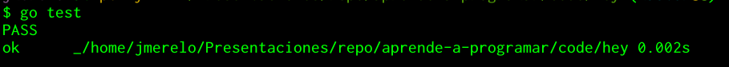

package main
import (
"fmt"
"net/http"
)
func main() {
http.HandleFunc("/", func (res http.ResponseWriter, req *http.Request) {
fmt.Fprintln( res, `<html>
<head><title>Página</title><script>console.log('☒ Cargada')</script></head>
<body><h1>Cargada</h1></body></html>`)
})
ε := http.ListenAndServe(":50403", nil)
if ε != nil {
panic( ε )
}
}
Ejecutando
go run code/hey.go &

Encuentra el lenguaje
1. Go
2. HTML
3. JavaScript
4. HTTP DSL
5. Toolchain DSL
package main
import (
"fmt"
"net/http"
"os"
)
func main() {
http.HandleFunc("/",
func (res http.ResponseWriter, req *http.Request) {
fmt.Fprintln( res, `<html>...</body></html>`)
})
ε := http.ListenAndServe(":"+os.Getenv("PORT"), nil)
if ε != nil { panic( ε ) }
}
>
package main
import (
"testing"
"strings"
)
func TestPage(t *testing.T) {
page := MainPage()
if strings.LastIndex(page, "<") < 0 {
t.Error("Estructura incorrecta")
}
}
